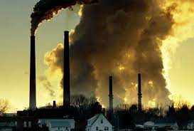
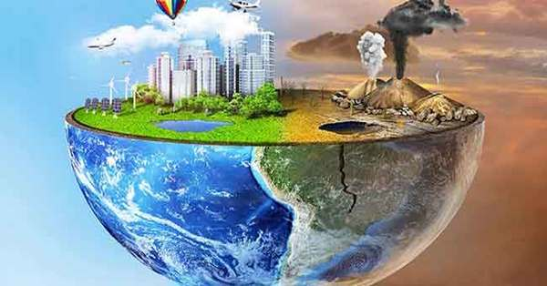
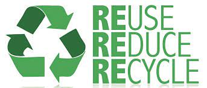

Pollution and Its Effects
What is Pollution?
Pollution is the presence or introduction into the environment of substances or materials that cause harm or discomfort to living organisms. Pollution can come from various sources, including industrial processes, transportation, and agriculture.
Effects of Pollution
Pollution has many negative effects on the environment and human health. Air pollution can cause respiratory problems and contribute to climate change. Water pollution can contaminate drinking water and harm aquatic life. Soil pollution can reduce the fertility of the land and affect the health of plants and animals. Pollution also has economic impacts, such as reduced property values and increased healthcare costs.
How to Reduce Pollution
There are many ways to reduce pollution. We can reduce our use of fossil fuels by using public transportation, walking, or biking instead of driving. We can also switch to renewable energy sources like wind and solar power. Recycling and reducing waste can also help to reduce pollution. Additionally, supporting policies and regulations that limit pollution can have a significant impact.
